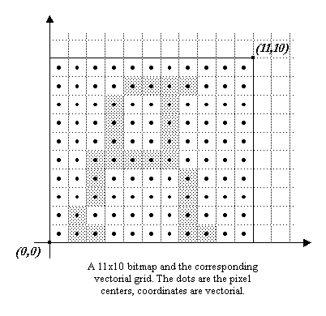
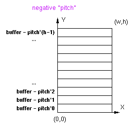

VII. FreeType Bitmaps
The purpose of this section is to present the way FreeType manages bitmaps and pixmaps, and how they relate to the concepts previously defined. The relationship between vectorial and pixel coordinates is explained.
1. Vectorial versus pixel coordinates
This sub-section explains the difference between vectorial and pixel coordinates. To make things clear, brackets will be used to describe pixel coordinates, e.g. ‘[3,5]’, while parentheses will be used for vectorial ones, e.g. ‘(-2, 3.5)’.
In the pixel case, as we use the Y upwards convention; the coordinate [0, 0] always refers to the lower left pixel of a bitmap, while coordinate [width-1, rows-1] to its upper right pixel.
In the vectorial case, point coordinates are expressed in floating units, like (1.25, -2.3). Such a position doesn't refer to a given pixel, but simply to an immaterial point in the 2D plane.
The pixels themselves are indeed square boxes of the 2D plane, whose centers lie in half pixel coordinates. For example, the lower left pixel of a bitmap is delimited by the square (0, 0)-(1, 1), its center being at location (0.5, 0.5).
This introduces some differences when computing distances. For example, the length in pixels of the line [0, 0]-[10, 0] is 11. However, the vectorial distance between (0, 0)-(10, 0) covers exactly 10 pixel centers, hence its length is 10.

2. The FT_Bitmap descriptor
In FreeType, a bitmap or pixmap is described through a single structure, called FT_Bitmap. The fields we are interested in are:
| rows | the number of rows, i.e. lines, in the bitmap |
| width | the number of horizontal pixels in the bitmap |
| pitch | its absolute value is the number of bytes per bitmap line; it can be either positive or negative depending on the bitmap's vertical orientation |
| buffer | a typeless pointer to the bitmap pixel buffer |
| pixel_mode | an enumeration used to describe the pixel format of the bitmap; examples are ft_pixel_mode_mono for 1-bit monochrome bitmaps and ft_pixel_mode_grays for 8-bit anti-aliased ‘gray’ values |
| num_grays | this is only used for ‘gray’ pixel modes, it gives the number of gray levels used to describe the anti-aliased gray levels (256 by default with FreeType 2) |
Note that the sign of the pitch field determines whether the rows in the pixel buffer are stored in ascending or descending order.
Remember that FreeType uses the Y upwards convention in the 2D plane, which means that a coordinate of (0, 0) always refer to the lower-left corner of a bitmap.
If the pitch is positive, the rows are stored in decreasing vertical position; the first bytes of the pixel buffer are part of the upper bitmap row.
On the opposite, if the pitch is negative, the first bytes of the pixel buffer are part of the lower bitmap row.
In all cases, one can see the pitch as the byte increment needed to skip to the next lower scanline in a given bitmap buffer.
|  |

|
The ‘positive pitch’ convention is very often used, though some systems might need the other.
3. Converting outlines into bitmaps and pixmaps
Generating a bitmap or pixmap image from a vectorial image is easy with FreeType. However, one must understand a few points regarding the positioning of the outline in the 2D plane before converting it to a bitmap:
-
The glyph loader and hinter always places the outline in the 2D plane so that (0, 0) matches its character origin. This means that the glyph's outline (and corresponding bounding box), can be placed anywhere in the 2D plane (see the graphics in section III).
-
The target bitmap's area is mapped to the 2D plane, with its lower left corner at (0, 0). This means that a bitmap or pixmap of dimensions [w, h] will be mapped to a 2D rectangle window delimited by (0, 0)-(w, h).
-
When scan-converting the outline, everything that falls within the bitmap window is rendered, the rest is ignored.
- The first image shows a loaded outline in the 2D plane.
- The second one shows the target window for a bitmap of arbitrary dimensions [w, h].
- The third one shows the juxtaposition of the outline and window in the 2D plane.
- The last image shows what will really be rendered in the bitmap.
A common mistake made by many developers when they begin using FreeType is believing that a loaded outline can be directly rendered in a bitmap of adequate dimensions. The following images illustrate why this is a problem.

Indeed, in nearly all cases, the loaded or transformed outline must be translated before it is rendered into a target bitmap, in order to adjust its position relative to the target window.
For example, the correct way of creating a standalone glyph bitmap is as follows:
-
Compute the size of the glyph bitmap. It can be computed directly from the glyph metrics, or by computing its bounding box (this is useful when a transformation has been applied to the outline after loading it, as the glyph metrics are not valid anymore).
-
Create the bitmap with the computed dimensions. Don't forget to fill the pixel buffer with the background color.
-
Translate the outline so that its lower left corner matches (0, 0). Don't forget that in order to preserve hinting, one should use integer, i.e., rounded distances (of course, this isn't required if preserving hinting information doesn't matter, like with rotated text). Usually, this means translating with a vector (-ROUND(xMin), -ROUND(yMin)).
-
Call the rendering function (it can be FT_Outline_Render, for example).
In the case where one wants to write glyph images directly into a large bitmap, the outlines must be translated so that their vectorial position corresponds to the current text cursor or character origin.
Last update: 07-Dec-2014